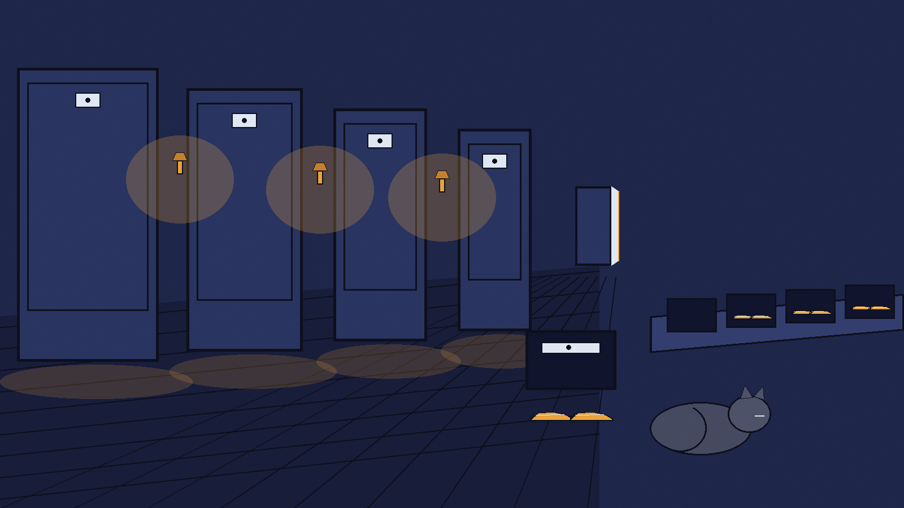
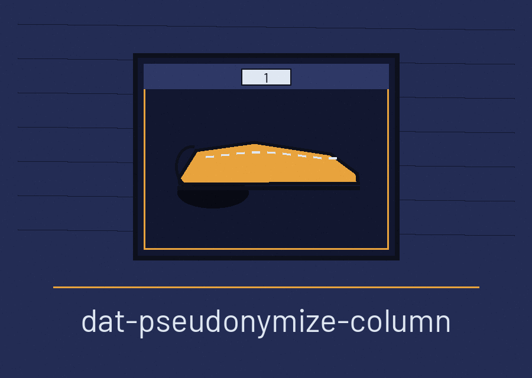
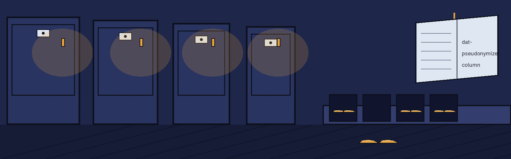

dat-pseudonymize-column: The Sleeping Car's Slipper Shelf


One Column Only
Shape Chooses the Swap
Repeats Still Match
Zero Is a Real Seed
Zeros Are Not Kept
First plate: the job
The program reads one CSV file. It rewrites one named column. Each value in that column is swapped for a Faker pseudonym chosen by the shape of the value. All other columns pass through untouched. Row order stays. The header row stays.
Second plate: shape chooses the swap
A blank cell stays blank. A signed whole number stays a whole number with the same sign and the same count of digits. A decimal stays decimal with the same sign, the same count of digits before the point, and the same count of places after it. A value shaped like an email address gets a fresh email address. A date written year first with dashes gets a date in that same layout. A date written day first with slashes gets a date in that same layout. A string of one or two words gets a personal name. A string of three words or more gets a block of generated text. Any value that fits no class above also gets a personal name. That fallback is stated here at full size.
Third plate: repeats still match
Each distinct original value draws one pseudonym. That same pseudonym serves every later row holding the same original. Repeats still match each other in the output. The column can still serve as a join key. This holds with a seed and without one.
Fourth plate: the needs
Python 3 is required. So is Faker, at 20.1.0 or later. The requirements file names it. The hard edge stands beside it: the Faker import sits at the top of main.py, and without Faker, even a request for help stops at that import.
Fifth plate: the working form
python3 main.py INPUT.csv OUTPUT.csv COLUMN, with placeholders only. Beside the form, the README fault stands plainly: the README usage line shows a bare program name with a params placeholder. It names no interpreter, no script, and none of the three required positionals. The form on this plate is the true one, taken from the code.
Sixth plate: controls in parser order
Input file comes first. It is positional and required. Output file comes next. It is positional and required. Column name comes next. It is positional and required. Locale follows. Its flag is --locale. Default is en_US. Seed closes the list. Its flag is --seed. It takes an integer. It has no default. Help is --help, printed by the parser as -h in the README list.
Seventh plate: the seed berth
A seed makes the draws repeatable. Seed zero is a real seed, not an absence. The code tests for None, so zero works. Two cautions sit beside it. Seeding is set on the Faker class, so it sets the sequence for every Faker in the process. Draws follow the order in which distinct values first appear. The same seed over the same values in a different row order gives a different mapping.
Eighth plate: shape losses
Leading zeros are not kept. A three digit value written with leading zeros draws a plain three digit number, and the zeros are gone. A code can come back looking like a quantity. Slash dates are always written back day first. A month first value in that layout comes back day first, and nothing in the output marks the swap. Generated text is drawn at least ten characters long, or the length of the original when that is longer.
Ninth plate: refusals and exits
The header is read and the column is checked before the output file is opened. A missing column raises an error and the run exits 1. No output file is left behind by that failure. An empty input, with no header row, also fails and exits 1. A missing input file exits 1. A short row draws a warning, keeps its place, and is written without a swap for that cell. A clean run prints a completion line and exits 0.
Last plate: licence
The LICENSE file in the repo carries the MIT License. Its holder line pairs a pen name with one initial for the rest of the name. That initial is left unexpanded.
Gathered notes
The buttons of this re-skin read Swap the Column, Set the Seed, and Read the Night Log. Its headings read One Column Only, Shape Chooses the Swap, Repeats Still Match, Zero Is a Real Seed, and Zeros Are Not Kept. The working form is python3 main.py, then the input CSV path, then the output CSV path, then the column name, with --locale (default en_US) and --seed (an integer, no default) after them. Python 3 and Faker at 20.1.0 or later are required, and the Faker import sits at the top of main.py, so without Faker even a request for help stops at that import. A missing column, an empty input, and a missing input file each end the run at exit 1, a short row is written without a swap for that cell, and a clean run exits 0. Seed zero is a real seed. Leading zeros are not kept. The repository LICENSE file carries the MIT License; its holder line pairs a pen name with one initial for the rest of the name, and that initial is left unexpanded here.
Defects account
Defects account. The README licence words name an organisation that is not this one, and they are printed as they stand only here and in the preserved record below: Copyright (c) ShadowStrikeHQ. The install line in the preserved record names that same other organisation; neither line is silently fixed. The theme entry also carried faults this re-skin corrects: a false fit claim about sealing and unsealing with keys, where this program uses no key and seals nothing; impossible motions, a slipper made to blink, cats set bobbing down a lane, moon phases going out, star blankets waxing; a borrowed step, the slipper stepping forward; and a kit border of whole sleeping cats used as trim. The README parameter list omits the three required positionals, and the code limits in the plates above are the ones the README understates.
Preserved record
# dat-Pseudonymize-Column Replaces values in a specified column of a CSV file with pseudonyms drawn with the Faker library, routed by the shape of each value. Signed integers stay numeric, keeping the sign and the digit count. Decimals stay numeric, keeping the sign, the integer digit count, and the number of decimal places. Email shaped values are replaced with an email, dates in YYYY-MM-DD form or DD/MM/YYYY form are replaced with a date in the same form, one or two word strings are replaced with a name, and longer text is replaced with text. Empty cells stay empty. Each distinct original value gets one pseudonym: the first value drawn for it is reused for every later row with the same original, so repeated values still match each other in the output and the column can still be used as a key. A --seed makes the draws reproducible, and the mapping holds within a seeded run as well. Other shapes are not preserved as their own kind: a value that matches none of the classes above is replaced with a name. ## Install `git clone https://github.com/ShadowStrikeHQ/dat-pseudonymize-column` ## Usage `./dat-pseudonymize-column [params]` ## Parameters - `-h`: Show help message and exit - `--locale`: Locale for Faker (default: en_US). - `--seed`: Seed for Faker's random number generator for reproducibility. Repeated original values receive the same pseudonym within a run, with or without a seed. ## License Copyright (c) ShadowStrikeHQ